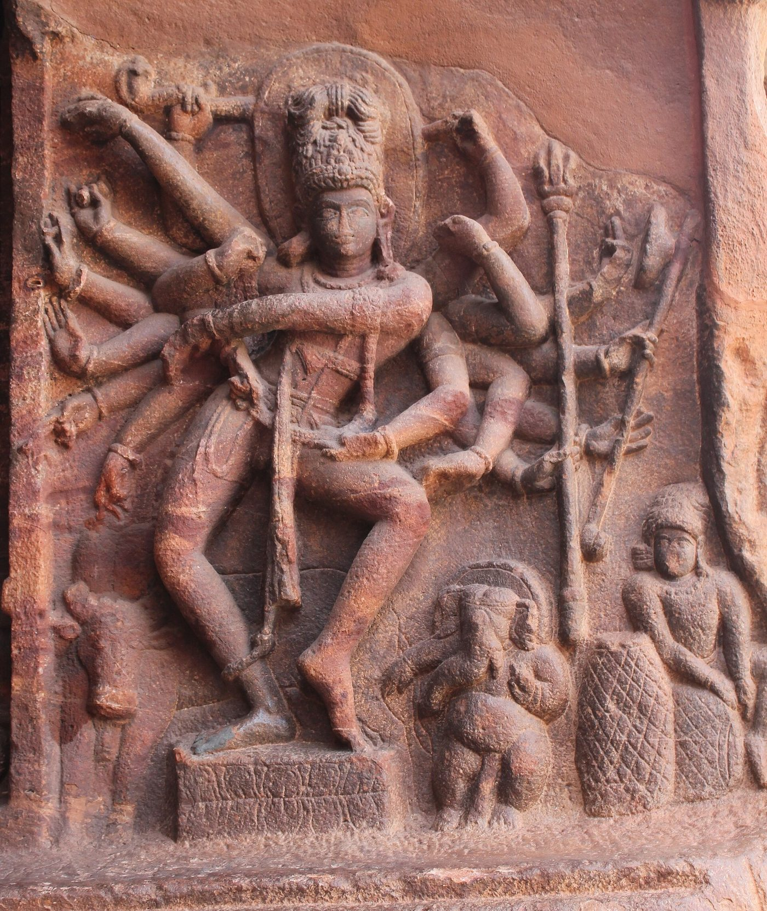

Chapter 12: The Abhinayadarpaṇa and the Later Dance Treatises¶
The Nāṭyaśāstra was followed by a long series of treatises that dealt with dance, either as part of a larger account of music (saṅgīta) or on its own. Some were encyclopaedic works written at royal courts; others were short manuals for teachers and performers. The best known of the latter, and in the twentieth century the most influential of all Sanskrit texts on dance, is the Abhinayadarpaṇa (“Mirror of Gesture”) ascribed to Nandikeśvara. A short Sanskrit manual of uncertain date thus became, in the twentieth century, the classroom text of a whole family of dance forms, and the question how far it, and the longer treatises of the medieval courts, describe what dancers actually did runs through what follows. The hand gestures of the Abhinayadarpaṇa, its most famous contribution, are treated together with those of the Nāṭyaśāstra and the Kerala manuals in Chapter 14; the four means of acting (abhinaya) that frame all these texts are described in Chapter 3.
12.1 The Text and Its Transmission¶
12.1.1 Nandikeśvara¶
Nandikeśvara, “lord of Nandi” or “Nandi the lord”, is the name of Śiva’s attendant and gatekeeper, and in Indian tradition an authority on music and dance; Abhinavagupta and Śārṅgadeva cite a Nandikeśvara among the early theorists. Several works are ascribed to him, among them the Abhinayadarpaṇa and the Bharatārṇava, a larger treatise on dance known in an incomplete form. Whether these works have anything to do with the early authority, or with each other, is uncertain. The Abhinayadarpaṇa as we have it is a compact manual of a few hundred verses whose date has been placed by different scholars anywhere between the early centuries CE and the thirteenth century or later; most recent writers prefer a date later than the Nāṭyaśāstra, but there is no secure evidence (Ghosh 1957; Bose 1991). It survives in manuscripts from the south, and differences between them, in the number of verses and in the lists of gestures, show that it was adapted by its users.
12.1.2 Editions and translations¶
The text became widely known through two works. In 1917 the art historian Ananda K. Coomaraswamy, with the Telugu scholar Duggirala Gopalakrishnayya, published The Mirror of Gesture, an English translation of the Abhinayadarpaṇa with an introduction that presented Indian dance as a spiritual and classical art (Coomaraswamy and Duggirala 1917). Manomohan Ghosh published the Sanskrit text with an English translation in 1934 and in revised editions thereafter, and his text and numbering are used here (Ghosh 1957). In the twentieth century the Abhinayadarpaṇa became the textbook of the reconstructed Bharatanāṭyam and of the other southern dance forms: students learn its lists of hands and of head, eye and neck movements by heart, and its verses are recited in the classroom.
12.1.3 The invocation¶
The Abhinayadarpaṇa opens with a celebrated verse in which Śiva is described as the embodiment of the four kinds of acting:
Abhinayadarpaṇa 1
āṅgikaṃ bhuvanaṃ yasya vācikaṃ sarvavāṅmayam
āhāryaṃ candratārādi taṃ numaḥ sāttvikaṃ śivam
“We bow to the auspicious one, the embodiment of sattva, whose bodily acting is the world, whose verbal acting is all language, and whose costume is the moon and the stars.”
The verse expresses in a single couplet the idea, central to the devotional understanding of Indian dance, that the dance of the performer is a reflection of the dance of the god. It also neatly names the four means of acting described in the Nāṭyaśāstra: bodily (āṅgika), verbal (vācika), extraneous (āhārya) and inner (sāttvika).
12.2 Drama, Dance and Pure Dance¶
After a short account of the origin of drama, retold from the Nāṭyaśāstra, the Abhinayadarpaṇa distinguishes three kinds of performance. Nāṭya is drama, the representation of a traditional story. Nṛtta is dance that has no expression of mood or meaning, consisting of pure movement. Nṛtya is dance that expresses rasa and bhāva, the emotions and their states. The distinction, which goes back in this form to texts of the late first millennium, became the basis of the modern analysis of the dance forms into passages of pure and expressive dance; it is discussed in Chapter 13. The text recommends that nṛtta and nṛtya be performed especially at the coronations of kings, at festivals, processions and weddings, and on other auspicious occasions — a reminder of the courtly and ceremonial world for which it was written.
12.3 The Assembly and the Dancer¶
12.3.1 The assembly¶
The Abhinayadarpaṇa imagines the performance as taking place before an assembly (sabhā) presided over by a king or patron. It compares the assembly to a wish-fulfilling tree, of which the Vedas are the branches, the sciences the flowers and the learned the bees, and it describes the qualities of the patron (sabhāpati): wealth, intelligence, discrimination, generosity, knowledge of music and dance. It prescribes the seating: the patron in the centre, his ministers and poets around him, the musicians placed so as to be heard, and the dancer in front of the assembly.
12.3.2 The dancer and the accompanists¶
The dancer is called the pātra (“vessel” or “character”), and the text assumes that she is a woman. It describes her as young, beautiful, graceful, confident, knowledgeable about rhythm and music, and responsive to the mood of the assembly, and it lists the qualities, physical and moral, that disqualify a dancer. It names ten “vital elements” (prāṇa) of the dancer: speed (javana), steadiness (sthiratā), line or grace of form (rekhā), turning (bhramarī), glance (dṛṣṭi), endurance (śrama), intelligence (medhā), devotion or commitment (śraddhā), speech (vacana) and song (gīta). It also describes the accompanists — the leader who keeps time with cymbals, the drummer, the flautist, the singers — and even the dancer’s ankle bells, which are to be of bronze and well tuned (Ghosh 1957; Coomaraswamy and Duggirala 1917).
Read historically, these passages describe the court and temple dance of the medieval and early modern south, performed by professional women dancers before male patrons, with male teachers and musicians. They are thus important evidence for the social world of the dancers who were later called devadāsīs (Chapter 15), and their emphasis on the dancer’s beauty and youth reflects that world’s assumptions as clearly as its aesthetic ideals.
12.3.3 Hand, eye, mind and feeling¶
Two verses of the Abhinayadarpaṇa (numbered 36–37 in common editions) state the principle of expressive dance more memorably than any other text:
Abhinayadarpaṇa 36–37 (Ghosh’s numbering)
kaṇṭhenālambayed gītaṃ hastenārthaṃ pradarśayet
cakṣurbhyāṃ darśayed bhāvaṃ pādābhyāṃ tālam ācaret
yato hastas tato dṛṣṭir yato dṛṣṭis tato manaḥ
yato manas tato bhāvo yato bhāvas tato rasaḥ
“The song should be sustained by the throat, the meaning shown by the hands, the feeling shown by the eyes, and the rhythm kept by the feet. Where the hand goes, there the eyes go; where the eyes go, there goes the mind; where the mind goes, there is feeling; where there is feeling, there is rasa.”
The first verse describes the older practice, in which the dancer herself sang the song she interpreted; in the modern forms the singing is usually done by a vocalist. The second makes the coordination of hand and eye the foundation of expression, and is perhaps the most quoted verse in Indian dance teaching.
12.4 The Movements of the Body¶
The Abhinayadarpaṇa’s analysis of the body is simpler than the Nāṭyaśāstra’s (Chapter 2). Its lists are short enough to be memorised and practised, which explains much of its popularity as a teaching text.
12.4.1 Head, eyes and neck¶
The text describes nine movements of the head (śirobheda), eight glances (dṛṣṭibheda) and four movements of the neck (grīvābheda), each with a list of uses (Table 12.1). The head may be held level (sama), raised (udvāhita), lowered (adhomukha), rolled in a circle (ālolita), shaken from side to side (dhuta), nodded up and down (kampita), turned away (parāvṛtta), turned and raised (utkṣipta) or moved from side to side like a fan (parivāhita). The lowered head expresses shame, sorrow or bowing; the shaken head denial or reluctance; the nodded head calling, questioning or threatening; the rolled head drowsiness, intoxication or possession. The eight glances range from the level gaze (sama) through the sidelong glance (sāci), the half-closed eye of meditation (nimīlita), the upward and downward glances (ullokita, avalokita) and the gaze that follows the hand (anuvṛtta). The four neck movements are the side-to-side glide (sundarī), the movement like a snake (tiraścīna), the sideways turn (parivartita) and the forward-and-back movement like a pigeon’s (prakampita); the gliding sundarī and prakampita are characteristic of Bharatanāṭyam and Kathakaḷi.
| Part | No. | Names |
|---|---|---|
| Head (śiras) | 9 | sama, udvāhita, adhomukha, ālolita, dhuta, kampita, parāvṛtta, utkṣipta, parivāhita |
| Eyes (dṛṣṭi) | 8 | sama, ālokita, sāci, pralokita, nimīlita, ullokita, anuvṛtta, avalokita |
| Neck (grīvā) | 4 | sundarī, tiraścīna, parivartita, prakampita |
| Hands (hasta) | 28 + 23 | single and combined hands, with further sets for gods, planets, relations and others (Chapter 14) |
These lists are much shorter than those of the Nāṭyaśāstra, which gives thirteen head movements, thirty-six glances and nine neck movements, together with movements of the eyebrows, eyelids, eyeballs, nose, cheeks, lips and chin. Later teachers often supplement the Abhinayadarpaṇa from the older text, and in practice dancers use many more facial movements than either text names; the training of the eyes in Kathakaḷi and Kūṭiyāṭṭam, for example, is far more elaborate (Chapter 18).
12.4.2 Postures, leaps, turns and gaits¶
The Abhinayadarpaṇa treats the lower body under several heads. It describes ten postures (maṇḍala), among them sthānaka (standing), āyata (with the knees bent outwards and the heels together, the basis of the half-seated position called araimaṇḍi in Bharatanāṭyam) and the lunges ālīḍha and pratyālīḍha; six standing positions (sthānaka), such as samapāda, ekapāda (on one foot) and nāgabandha; five leaps (utplavana); seven kinds of turn (bhramarī), including turns on one foot and turns in the air; eight movements of the feet (cārī); and ten gaits (gati), named after the swan, the peacock, the deer, the elephant, the horse, the lion, the snake and the frog, together with the gaits of the hero and of an ordinary man (Ghosh 1957).
These categories give the teacher a vocabulary rather than a technique. The Abhinayadarpaṇa does not describe the aḍavus of Bharatanāṭyam, the footwork of Kathak or the steps of Odissi, which belong to the living traditions and were systematised by twentieth-century teachers (Chapters 13, 15 and 16). Its gaits, however, are still taught, and its descriptions of the walks of animals and characters are used in dance-drama.
12.5 The Later Dance Treatises¶
Between the eleventh and eighteenth centuries a series of works in Sanskrit, and later in the regional languages, described dance as it was performed in the courts and temples of their authors’ time. Their general pattern is the same: they repeat, and sometimes reinterpret, the categories of the Nāṭyaśāstra (the “classical” or mārga dance), and then describe new, “regional” (deśī) forms, movements and items that the older text did not know. They are thus evidence both for the prestige of the ancient tradition and for the constant creation of new dance (Bose 1991; Vatsyayan 1968).
- Mānasollāsa
- (1131). An encyclopaedia of royal pleasures compiled at the court of the Cāḷukya king Someśvara III in Karnataka, with sections on music and dance.
- Saṅgītaratnākara
- (first half of the thirteenth century). Śārṅgadeva’s seventh chapter, on dance (nartana), was the most influential post-Nāṭyaśāstra account of the subject (below).
- Nṛttaratnāvalī
- (1253–54). Composed by Jāya Senāpati, a general of the Kākatīya king Gaṇapatideva in Andhra, this work describes the mārga tradition and then, in detail, the deśī dances of its time, including regional dances with names such as peraṇi, prekhaṇa, carcarī, rāsaka, daṇḍarāsa and kolāṭa, several of them group and stick dances that survive in some form in folk practice. V. Raghavan’s edition revealed the richness of medieval Andhra dance (Raghavan 1965).
- Saṅgītadāmodara
- (fifteenth century). A work by Śubhaṅkara from eastern India, dealing with music and dance.
- Nartananirṇaya
- (late sixteenth century). Puṇḍarīka Viṭṭhala, a southern scholar who worked at northern courts, describes forms of dance current in his time, including composed (baddha) and free (anibaddha) dance and items that have been compared with the later repertoire of Kathak.
- Saṅgītasārāmṛta
- (eighteenth century). A work on music and dance attributed to the Maratha king Tulajā of Thanjavur, important for the history of southern dance before the modern repertoire was fixed.
- Hastalakṣaṇadīpikā.
- An anonymous Kerala manual of hand gestures, of uncertain date, which provides the gesture vocabulary of Kūṭiyāṭṭam and Kathakaḷi (Chapter 14).
- Abhinayacandrikā.
- An Odia manual attributed to Maheśvara Mahāpātra, of uncertain date (probably eighteenth century), used in the reconstruction of Odissi (Chapter 17).
12.5.1 The Saṅgītaratnākara on dance¶
Because of its comprehensiveness and its authority in both north and south, Śārṅgadeva’s account of dance deserves a closer look. The seventh chapter of the Saṅgītaratnākara begins, like the Nāṭyaśāstra, with the origin of dance, and then defines nāṭya, nṛtta and nṛtya. It describes the movements of the major and minor limbs, largely following Bharata, and then gives the karaṇas, aṅgahāras and cārīs of the mārga tradition. What distinguishes it from the older text is the space it gives to deśī practice: postures (sthāna), cārīs and dance items that are not in the Nāṭyaśāstra and that Śārṅgadeva presents as current in his own time. It also discusses the qualities of the dance teacher (nāṭyācārya) and of male and female dancers, the composition of the troupe (sampradāya) with its singers, drummers and instrumentalists, and the faults to be avoided in performance (Shringy and Sharma 1978; Bose 1991). The commentaries of Siṃhabhūpāla and Kallinātha on this chapter show how later readers related its categories to the dance they knew.
12.5.2 The Nṛttaratnāvalī and the Kākatīya world¶
Jāya Senāpati’s Nṛttaratnāvalī is the most detailed surviving account of medieval regional dance. Its first four chapters deal with the mārga tradition of the Nāṭyaśāstra; the last four describe deśī postures, cārīs, movements and complete dance items, many of them group dances performed at festivals. Among these is the peraṇi, a vigorous dance performed by men before Śiva. The Kākatīya temple at Palampet (Rāmappa), built in 1213, carries dancing figures on its bracket figures and pillars that correspond in a general way to the dances Jāya Senāpati describes. In the late twentieth century the dancer and scholar Nataraja Ramakrishna used the text and the sculptures to create a modern Peraṇi Śivatāṇḍavam, an example, like Padma Subrahmanyam’s karaṇas, of the creative reconstruction of dance from texts and images.
12.6 Dance in Literature, Sculpture and Painting¶
The treatises are only one kind of evidence for the history of dance in India, and they have to be read with other kinds.
12.6.1 Literary evidence¶
Sanskrit and Prakrit literature is full of dancers. In Kālidāsa’s play Mālavikāgnimitra (c. fourth–fifth century) the plot turns on a dance contest: two rival dance masters, Gaṇadāsa and Haradatta, each present a pupil before the king, and the heroine Mālavikā wins the contest with a difficult composition, while a learned nun acts as judge; in the first act the dance master Gaṇadāsa praises drama as a single entertainment for people of different tastes. Harṣa’s Ratnāvalī (seventh century) opens with the spring festival, in which townspeople dance the group dance called carcarī in the streets. Court poetry describes dancers in palace halls and temple festivals, and Buddhist and Jain literature describes courtesans whose accomplishments included dance and music (Volume 8, Kāvya Kalpalatā). In Tamil, the Cilappatikāram (c. fifth–sixth century) describes the seven years of training of the dancer Mātavi under masters of dance, music, poetry and drumming, her debut before the Cōḻa king on a stage whose dimensions it records, and a series of eleven dances (patiṉoru āṭal) she performs at a festival, each associated with a god or a mythological episode (Parthasarathy 1993). These passages are literary and idealised, but they show that dance was a recognised profession with its own training, patrons and conventions in the early centuries CE.
12.6.2 Sculpture and painting¶
Visual art provides a continuous, if difficult, record. The small bronze figure from Mohenjo-daro of the third millennium BCE, popularly called the “dancing girl”, may or may not represent a dancer; the name is modern. From the second century BCE onwards, the reliefs of Bharhut and Sanchi show celestial dancers and musicians, some labelled by name; the paintings of Ajanta (fifth century CE) show dancers at courts and festivals; and from the sixth century, beginning with the many-armed dancing Śiva of Cave 1 at Badami (Figure 12.1), the dancing god becomes a major subject of Indian sculpture, culminating in the Cōḻa bronzes of Naṭarāja (Chapter 1). Medieval temples throughout India carry dancers on their walls and pillars: the karaṇa series of Thanjavur and Chidambaram (Chapter 2), the musicians and dancers of the dance hall at Konark, the bracket figures of Hoysaḷa temples, and the dancing figures of Khajuraho. Mughal and Rajput painting depicts court dancers and the dance of Kṛṣṇa and the cowherd women (Vatsyayan 1968).

_(cropped).jpg){kind=link}
Kapila Vatsyayan’s Classical Indian Dance in Literature and the Arts showed how these sources can be read together with the treatises, and how the postures and movements described in the texts can be recognised in sculpture. Her method has been immensely productive, but it has limits. Sculptors had their own conventions, and a frozen pose does not tell us how a dancer moved into it or out of it; and a sculpture that resembles a modern dance pose does not prove a continuous tradition between them. Much modern writing on Indian dance, especially in the context of the twentieth-century revival, has treated temple sculpture as a direct record of the dances that later dancers performed. It is more accurate to say that the sculptures, the texts and the modern forms all draw, in different ways and at different times, on a shared vocabulary of movement and image (Vatsyayan 1968; Bose 1991).
12.7 Texts and Practice¶
How far did the dancers of any period actually follow these texts? Mandakranta Bose’s study of the Sanskrit dance treatises shows that each of them combines inherited categories with descriptions of contemporary practice, and that the balance shifts over time: the later texts devote more and more space to the deśī, the regional and current, and less to the mārga of Bharata (Bose 1991). The texts were written by scholars, often at royal courts, and they record what their authors considered worth classifying; they were not instruction manuals from which dancers learnt their art. Dancers learnt from teachers, and the hereditary teachers of the south — the naṭṭuvaṉārs — had their own oral and written traditions in Tamil and Telugu, much of which has been lost.
In the twentieth century the relation between text and practice was reversed. The reformers who reconstructed the court and temple dance of the south as “Bharatanāṭyam”, and the founders of the other classical forms, sought authority in the Sanskrit texts, which were newly available in print. The Abhinayadarpaṇa, because it was short, practical and available in English, became the canonical text of the new forms; its lists were taught in the new institutions; and performers began to describe their art as the living embodiment of the Nāṭyaśāstra and the Abhinayadarpaṇa. This was a creative and in many ways productive use of the texts. But it also obscured the immediate history of the dances, which lay in the repertoire and teaching of the hereditary performers whose authority the reformers were displacing (Chapter 15) (Soneji 2012; Meduri 1988).
12.8 Comparisons¶
The Abhinayadarpaṇa and its relatives have often been compared with other systems of gesture and movement: the sign languages of deaf communities, the codified gestures of Japanese and Chinese theatre, the dance of Southeast Asia, and modern research on non-verbal communication. Some comparisons are illuminating — like sign languages, the hand gestures combine a limited number of shapes with location and movement to produce many meanings, and like spoken words they are polysemous and depend on context — but they should be made with care. The hasta vocabulary is not a language with its own grammar, and the claim that it “anticipated” modern sciences of communication confuses a performer’s code with a scientific theory. The dance traditions of Southeast Asia share themes and some gestures with Indian dance, but the direct influence of the Abhinayadarpaṇa on them has not been demonstrated. Claims that dance gestures have therapeutic effects are discussed, and qualified, in Chapter 23.
Further Reading¶
Coomaraswamy and Duggirala (1917) and Ghosh (1957) are the standard translations of the Abhinayadarpaṇa. Bose (1991) is the essential study of the Sanskrit dance treatises from the Nāṭyaśāstra to the eighteenth century, and Vatsyayan (1968) relates them to sculpture, painting and literature. Shringy and Sharma (1978) translates the Saṅgītaratnākara, and Parthasarathy (1993) the Cilappatikāram. On the twentieth-century use of the texts see Soneji (2012) and Meduri (1988).